Smart Astro Planner is a planning companion for amateur astrophotographers. It is a long way from what a tool like Telescopius offers, and it does not try to replace it or compete with it. Telescopius and similar atlases are excellent, and you should keep using them.
Most amateur imagers do not live near the pole, where winter nights last for months, and they do not shoot under a Bortle 0 sky. Few can rent a spot in a remote observatory with better conditions. Most work from a backyard, with a horizon partly hidden by the house or the trees, and clear nights that come one at a time.
Very few can collect ten hours per filter, on three or four filters, in five or six consecutive nights. Real projects stretch over weeks, one clear night after another.
Most atlases include a Tonight's best list, and Telescopius goes much further with powerful filters, but the answer is always for a single date. Smart Astro Planner does not answer "What can I photograph tonight?" It answers a different question: "What are my options over the next few weeks?"
Give it your site and a period of one to twelve weeks. It builds a list of targets that are genuinely usable from your backyard, week by week, taking into account your horizon and the altitude you need. Equipment only comes into play afterwards, per target, when you preview the real framing.
Smart Astro Planner is a Progressive Web App (PWA). It runs in your browser but can be installed on your home screen for a native app experience with offline access.
Once installed, your locations, equipment, targets and preferences are stored locally on your device, and the app itself is cached for offline use. An internet connection is only needed for Capture Advice (AI) and for online data: Wikipedia, Simbad and sky images.
The Help tab has an Open in browser button that opens this guide in a new browser tab, allowing you to keep the app and the help side by side.
Target selection is always local and instant — no AI or internet needed. The operating mode only affects the optional AI Description and Capture Advice cards:
| Assisted mode | Non-assisted mode |
|---|---|
| Requires a Claude API key (anthropic.com). The app calls Claude directly — everything happens inside the app. Cost: a few cents per request, at most. |
No API key needed. The app generates a ready-to-use prompt. You paste it into any AI (Claude, ChatGPT, Gemini, etc.), then paste the response back. Cost: free — uses your existing AI plan. |
Go to Settings, enter your Claude API key from console.anthropic.com, and set the mode to Assisted. Leave it as Non-assisted if you prefer to use another AI manually.
A Model dropdown appears once Assisted mode is on. Tap Load models to fetch the list of models available to your key, then pick which one to use for AI Description, Capture Advice and Fetch specs. It's your key and your cost, so the choice is yours — a newer/larger model tends to know more (useful for recognizing recent gear when fetching specs) but costs more per request.
The API key is separate from a regular claude.ai subscription — it's billed pay-as-you-go (a few cents per request in this app) rather than a monthly plan. To get one:
Go to the Equipment tab and tap +. Fill in your telescope, camera sensor specs, mount, controller, and available filters. In assisted mode, tap Fetch specs (for the sensor or the telescope) to auto-fill specs by model name — best effort; fill in manually anything it can't find.
Go to the Locations tab and tap + Add to add your first observing site with coordinates, elevation, Bortle class, estimated clear nights per year, and minimum imaging altitude. Use Use my location to auto-fill GPS coordinates. No location is pre-configured — you need at least one before generating a target list.
Each location can also have a Horizon Mask — see the next section.
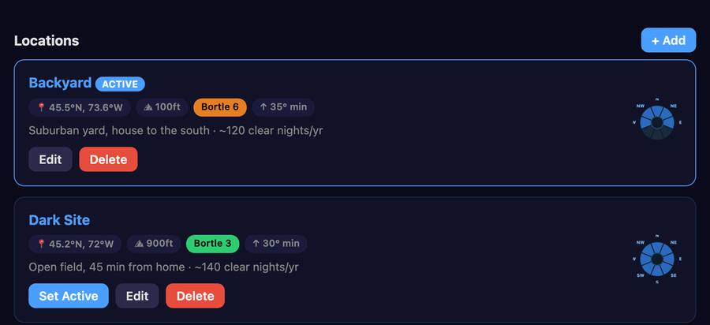
Each observing location can have a horizon mask — a map of which compass directions are actually visible from that site. This accounts for obstructions like buildings, trees, or terrain that block part of the sky.
In the Locations tab, tap Edit on a location and scroll to the Horizon Mask section. A compass rose with 8 sectors (N, NE, E, SE, S, SW, W, NW) is shown. Tap each sector to toggle it between visible (blue) and blocked (dark). Use All visible / All blocked for quick setup.
Each location also has a Min Imaging Altitude (default 35°). It applies to all target selections and visibility calculations for that site.
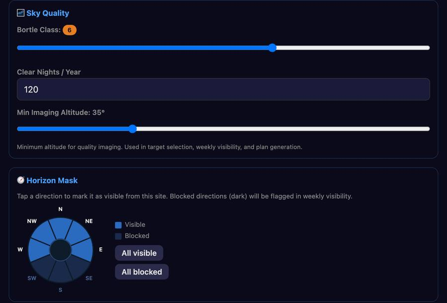
The horizon mask is shown as a small compass rose on each location card in the Locations tab — blue sectors are visible, dark sectors are blocked.
For every target, the app rates each week of your search period. The rating is based on the usable hours per night: the hours of astronomical night (Sun more than 18° below the horizon) during which the target is above your location's minimum altitude and, if you set a horizon mask, in a direction you can actually see.
| Rating | Meaning | Usable hours per night |
|---|---|---|
| EXC | Excellent — long imaging window | ≥ 4 h |
| GD | Good — decent imaging window | ≥ 2 h |
| MGN | Marginal — short window | > 0 h |
| — | Not usable from this site | 0 h |
The rating uses one night in the middle of each week, computed with the astronomy-engine library from your location's coordinates. It does not take the Moon into account — see Moon sensitivity in the Target Detail section for that.
In the Targets tab, tap New Target List. Target selection is instant — it draws from a local catalog of 19,000+ objects with no internet required, and has no equipment or field-of-view concept: it is purely about where and when a target is visible from your site. Equipment only comes in afterwards, per target, in the Framing card, where you can preview any of your configurations against the real sky.
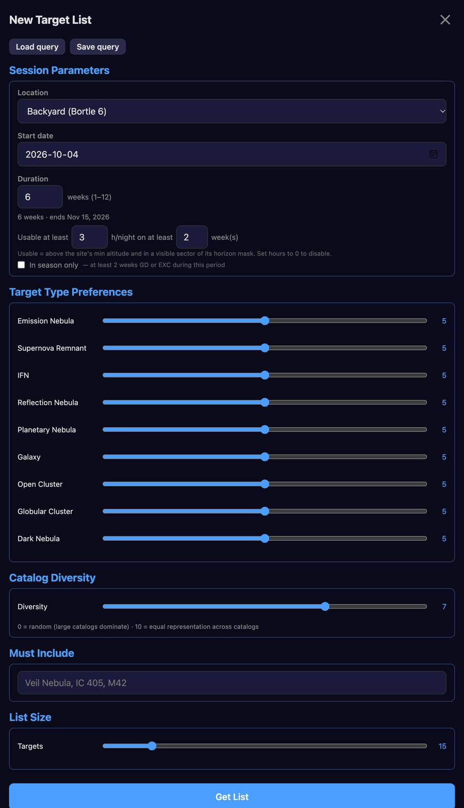
Setting a slider to 0 completely excludes that type. Higher values increase the probability of that type being selected.
Within a given type, some source catalogs are much larger than others (for example OpenNGC galaxies vastly outnumber the smaller specialized catalogs). The Diversity slider counterbalances this: at 0, sampling is purely random and large catalogs dominate; at 10, all source catalogs of that type get roughly equal representation. A middle value gives a reasonable mix without drowning out the smaller catalogs.
Enter specific object names or catalog IDs separated by commas. The search is case-insensitive and matches partial names — typing "Veil" will include all Veil Nebula components. Example: Veil, IC 405, Andromeda
Use the slider to select between 10 and 50 targets.
Tap Save query to save all current parameters under a custom name (e.g. "Galaxy Season", "Winter Narrowband"). Tap Load query to reload a saved query and pre-fill all fields.
Your targets appear sorted by type (in slider order) then alphabetically. Each target shows a type abbreviation (Em, SNR, IFN, Ref, PN, Gal, OC, GC, Dk) and a row of weekly visibility ratings (see Understanding Visibility Ratings).
Tap any target row to open its detail screen.
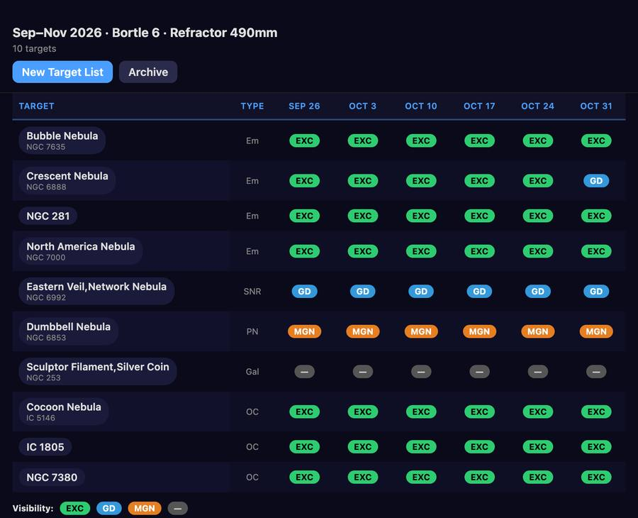
The detail screen shows comprehensive information about a target, in this order:
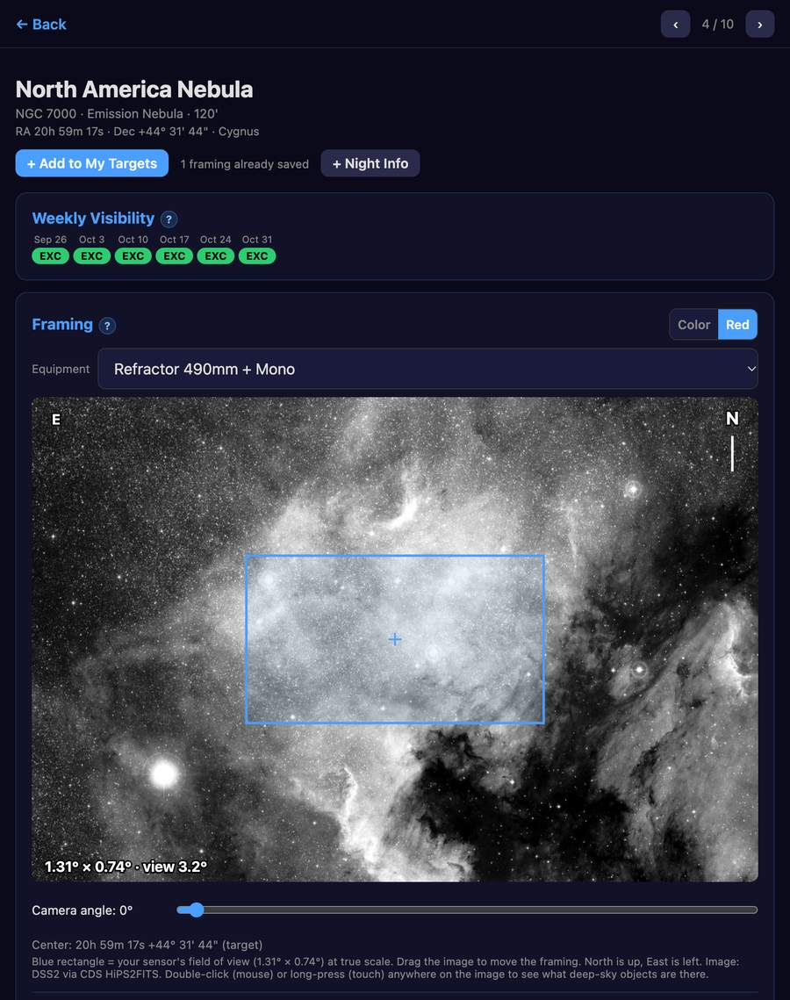
Based on the target's default filters:
Use ‹ and › at the top of the screen to move between the targets of your list without going back — a position indicator shows where you are (e.g. 3 / 14). On a touch screen, you can also swipe left/right anywhere on the screen to do the same, except while dragging the Framing image, rotating its camera-angle slider, or moving the Altitude Profile slider.
When enabled in Settings and an equipment configuration exists, the detail screen shows a real sky image (DSS2, from the CDS HiPS2FITS service) centered on the target with your sensor's field of view drawn on top at true scale. North is up, East is left. Because it is a real image rather than a catalog size, it stays accurate even when the catalog's own size data is missing or wrong.
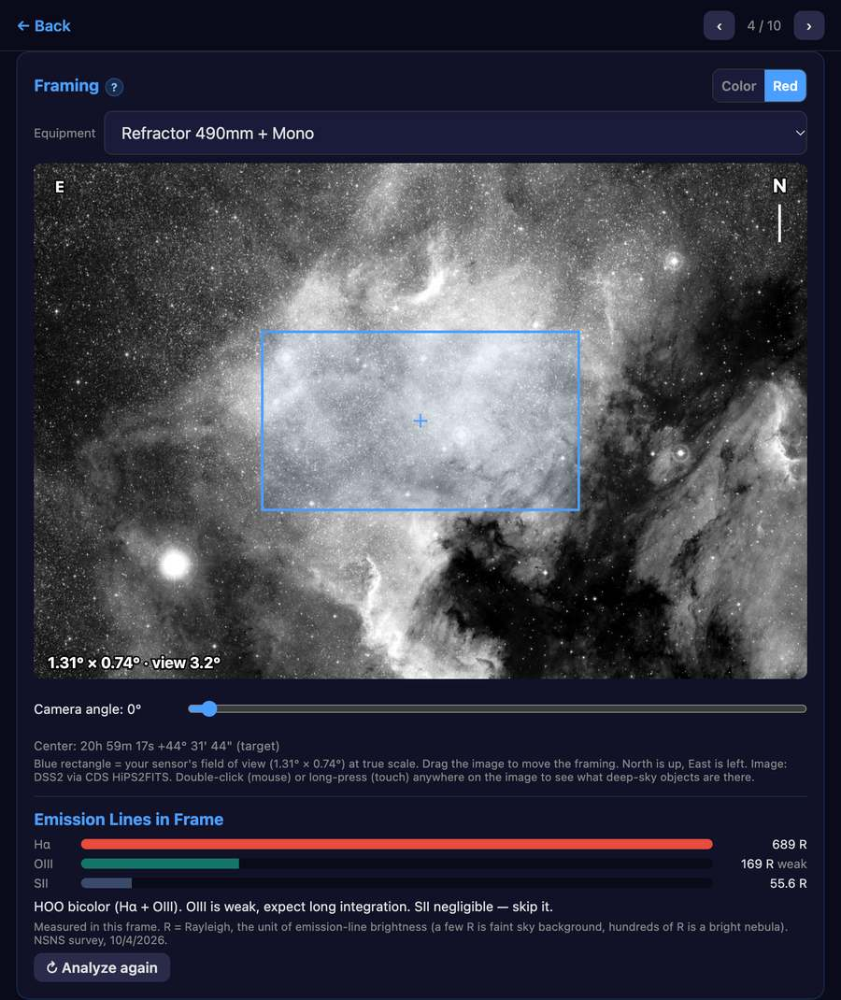
Under the framing image, Analyze framing measures how much Hα, OIII and SII signal lies inside your current frame (position, angle and equipment), using the Northern Sky Narrowband Survey. It shows one bar per line, the intensity in Rayleighs, and a suggestion: LRGB when the emission is very faint, otherwise HOO, SHO, an Hα bicolor or a single narrowband filter, with the weak or negligible lines called out.
The rectangle starts centered on the catalog coordinates of the target (or, in My Targets, the exact framing you saved). Images are cached on the device (up to 80) and the oldest are removed automatically. Settings → Preferences shows the number of cached images and their total size, with a Clear button.
An interactive chart showing the target's altitude throughout the night. The background is shaded to indicate twilight zones:
The blue filled area shows when the target is above the location's minimum imaging altitude. A dashed line shows the Moon's angular separation from the target on the same 0–90° scale — the dash pattern reflects lunar phase (dotted = new moon, solid = full moon).
Use the slider below the chart to navigate between weeks. Swipe on the chart, or tap ‹ ›, to toggle between WEEK mode (weekly overview) and DAY mode (day-by-day within the selected week) — the slider then moves through weeks or days depending on the current mode.
If you set Moon Separation Thresholds in Settings → Preferences (a minimum comfortable angular distance, in degrees, for Hα, OIII, SII and/or Broadband), the Moon line switches from plain grey to a color that tells you what's actually shootable at each point in the night — using only the filters present on this target's own equipment. Green means every relevant filter is fine; the muted dark red means none are; otherwise the line takes the color of the most demanding filter still usable — an OIII-colored segment means OIII, and anything easier (Hα, SII), is fair game. Leave all four fields blank to keep the line plain grey, as before.
A bar chart showing how many hours per night the target is above the location's minimum altitude during astronomical night, for each month of the year. The best month is highlighted in green.
This helps answer the question: when is the best time of year to image this target from my location? Like the Altitude Profile, it follows your current framing center once you have moved it.
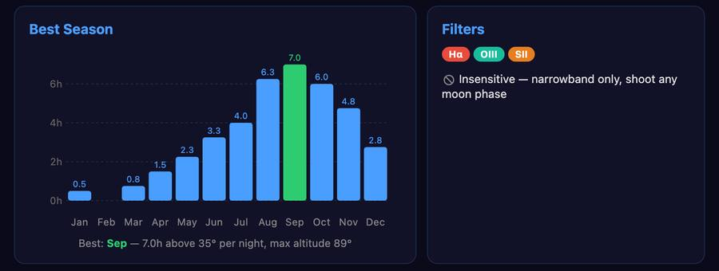
At the bottom of the detail screen, cards give background on the object:
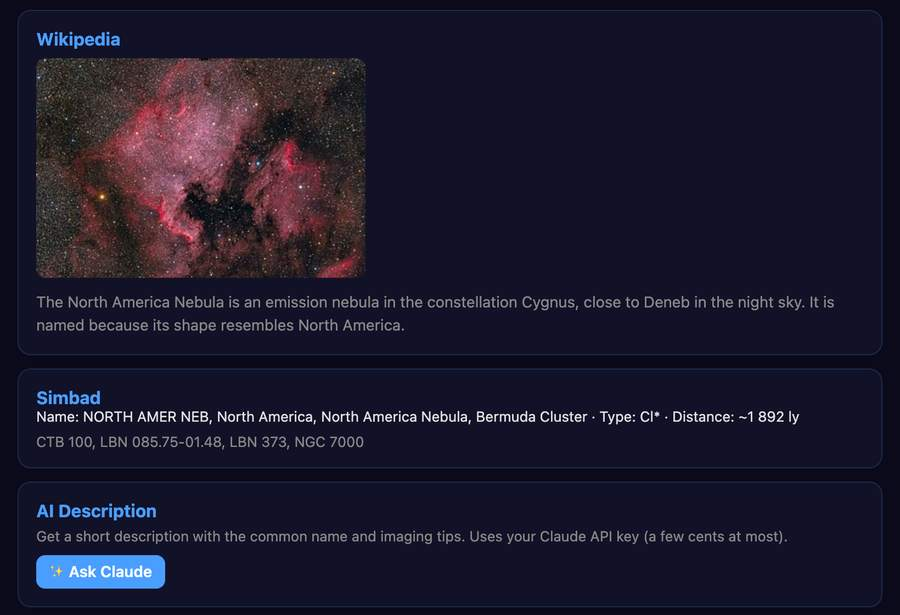
In assisted mode (with a Claude API key), the bottom of the detail screen has an AI Description card. Tap ✨ Ask Claude to get a short description: the common name if there is one, what the object is, and practical imaging advice (filters, size compared with your field of view). Useful for catalog entries that have no Wikipedia article.
A saved query stores all search parameters — location, period, all sliders, diversity, Must Include, list size — under a custom name.
Tap Archive next to "New Target List" to save your current list. A dialog asks for a name (required) and optional description.
Saved lists appear at the bottom of the Targets tab. Tap any to reload it as the active list. Each has a Delete button.
This is the heart of Smart Astro Planner — the list of targets you actually intend to capture, each one pinned to a specific framing, a specific telescope/camera, and a specific observing site. When you're ready to start a new target, this is where you come to pick one: everything you need (RA/Dec, camera angle, equipment, site) is already fixed and waiting, nothing to re-decide.
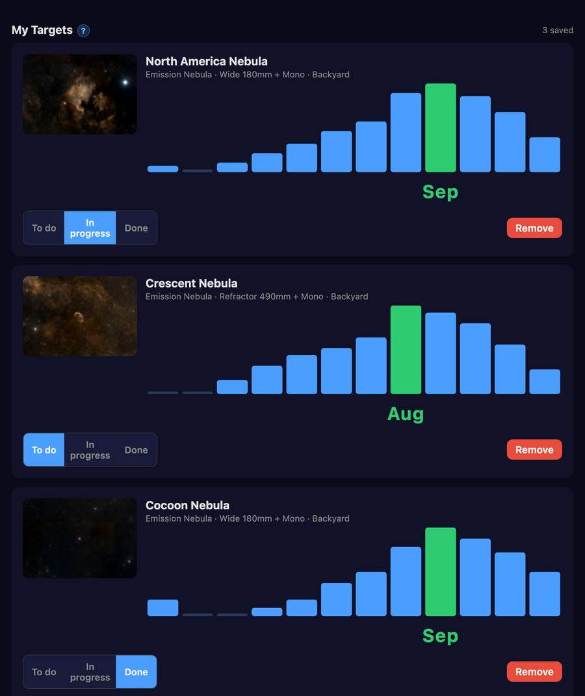
From a search-result target's detail screen, adjust the Framing card the way you want it — position, camera angle, equipment — then tap + Add to My Targets. The site is whatever location that search was run for. It always creates a new entry, so framing the same object again with a different lens, a different angle, or from a different site is a deliberate, separate entry rather than an overwrite — useful if you image the same target from two different setups (e.g. a backyard rig and a remote observatory).
Each card shows a vignette of the saved framing, the equipment and site used, a small unlabeled Best Season chart (for that entry's own fixed site), and a status control: To do, In progress, Done. Tap a card to open it.
Opening a My Targets entry reuses the same detail screen as a search result, with a few differences:
In assisted mode, tap ✨ Get Capture Advice for a recommendation based only on the target, your fixed equipment, your site's Bortle class, and any emission-line measurement you have taken — deliberately no dates, no weather, no total integration time, since none of that is known this far ahead. It suggests a filter/palette strategy, a relative integration split across filters (percentages, not hours), and calls out anything that will be difficult from your sky darkness or hard to frame. In non-assisted mode, copy the generated prompt into any AI and paste the response back.
The Night Info tab lets you save targets with their exact framing coordinates and instantly see when they will transit and the twilight windows for the night — without switching between apps or recalculating by hand each night.
The primary use case is verifying your mount's meridian flip time. If your mount (e.g. Stellavita) displays a time remaining before flip, add the current time to get the expected transit time, then compare it to what Smart Astro Planner shows.
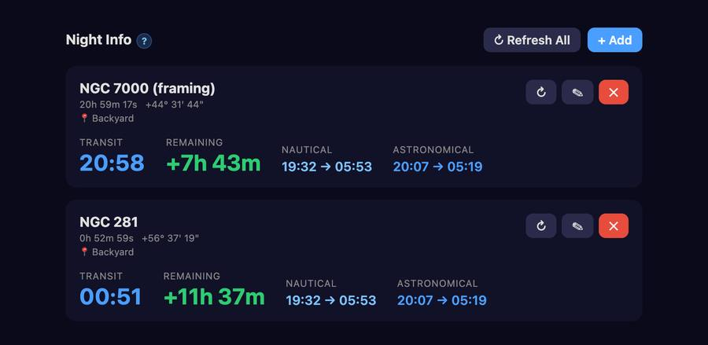
Tap + Add in the Night Info tab, or tap + Night Info on any target detail screen to pre-fill the coordinates automatically.
A formatted preview (0h 54m 11s / +56° 37' 19") appears below each field as you type to confirm your entry.
All times are calculated for the target's assigned location. Tap ↻ on a card or ↻ Refresh All to recalculate with the current device time.
A significant discrepancy (more than a few minutes) indicates your mount's internal calculation may be drifting or using incorrect coordinates.
Go to Settings → Backup & Sync to export and import all your data as a single JSON file.
Not included: your Claude API key (for security), the API usage history, and the search-result list currently on screen. Assisted mode is only applied on a device that already has an API key.
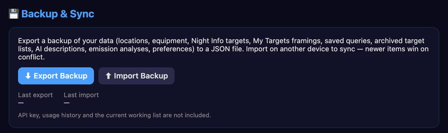
Tap ⬇ Export Backup. The file is named sap-backup-YYYY-MM-DD.json. On supported browsers, a save dialog lets you choose the destination directly (e.g. iCloud Drive). On Safari iOS, the file opens in a new tab — tap Share → Save to Files to save it to iCloud Drive or another location.
Tap ⬆ Import Backup and select a backup file. The import uses a merge strategy: each item is compared by its last-modified timestamp, and the more recently modified version wins. Nothing is deleted — items present on the device but absent from the backup are kept. Saved queries and archived lists are added when new; AI descriptions and analyses keep the most recent version for each target; preference changes are merged.
The site and equipment that were active on the exporting device are applied only on a device that has not chosen one yet.
A confirmation toast reports what changed: Locations: +2 new, 1 updated · Equipment: already up to date.
The Last export and Last import timestamps in Settings help you track when each device was last synced.
The app includes a local catalog of 19,092 deep sky objects from 12 professional astronomical catalogs. No internet connection is needed for target selection.
Go to Settings → Local Database to see a breakdown by object type with source catalogs.
Source catalogs include OpenNGC (NGC/IC), Sharpless, van den Bergh, Cederblad, RCW, Barnard, LDN, LBN, Green SNR, Strasbourg-ESO Planetary Nebulae, Dias Open Clusters, and Mandel-Wilson IFN.
The developer offers support for this app on the Astro Dev Hub Discord server — join with this invite link: https://discord.gg/bwkWKcajRM
Smart Astro Planner — a project by Crepusculum (crepusculum.space)
AI powered by Claude (Anthropic) · Object catalog from VizieR/CDS, OpenNGC, Wikipedia, and Simbad